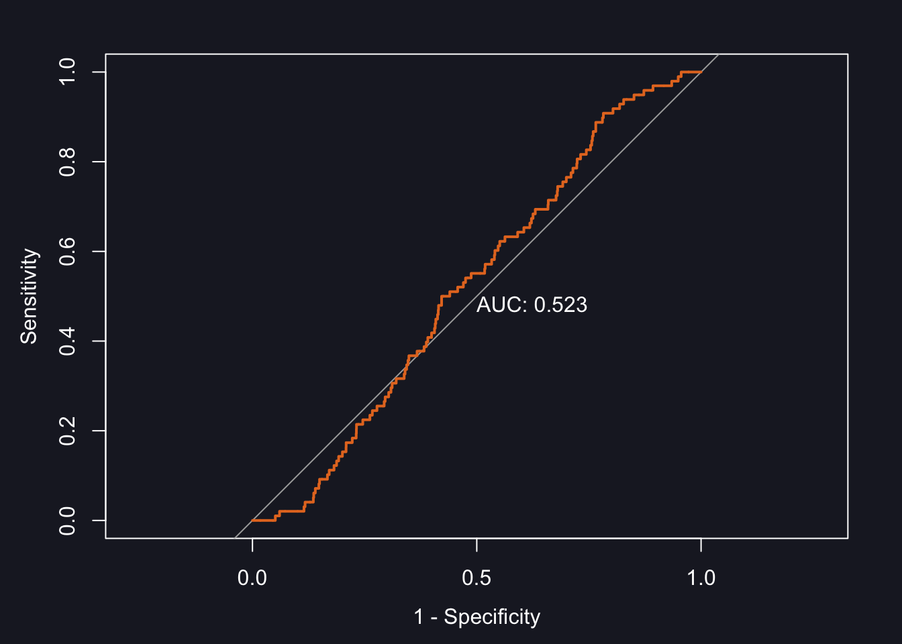
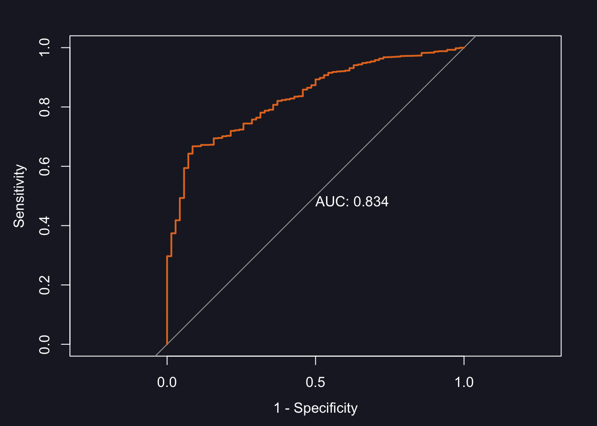
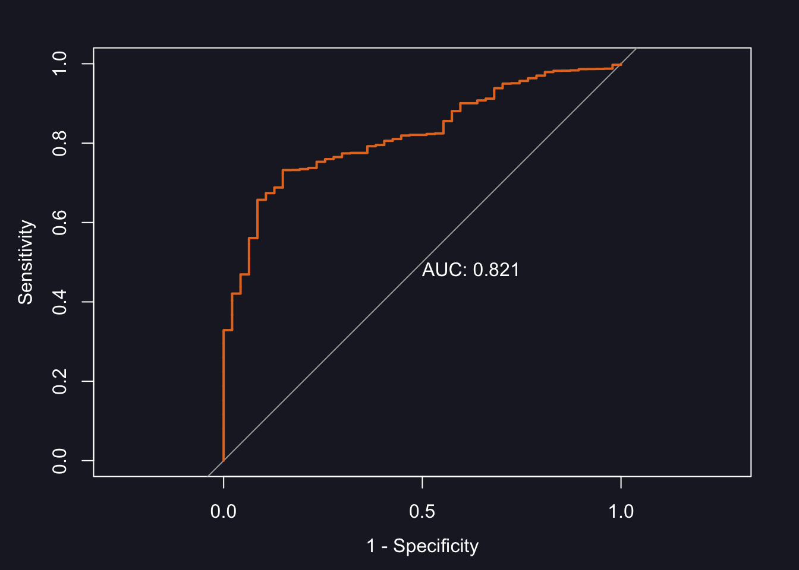

| country | year | literacy |
|---|---|---|
| A | 2000 | 80 |
| A | 2001 | 81 |
| A | 2002 | 85 |
| A | 2003 | 90 |
| B | 2000 | 92 |
| B | 2001 | 93 |
| B | 2002 | 95 |
| B | 2003 | 99 |
Week 7
Road Map for Today
| The Formative - General Feedback |
| Lecture |
| Time Series |
| Markov Transition Models |
| Conditional Probabilities |
| Democratic Emergence |
| Democratic Survival |
| Model Fit |
| Break |
| Markov-Transition Models in R |
Learning Outcomes
After this week, students should be able to:
- Understand and apply binary response models in the context of time-series, cross-sectional data (Markov-Transition Models)
- Model the emergence and survival of democracy
- Evaluate model fit for binary response models
- Design custom lines in
modelsummarytables
Markov Transition Models
Time Series, Cross-Sectional Data
We are now entering the real world, as we will start to look at how characteristics vary, not only across different countries, but also across time. I have already presented the structure of time-series, cross-sectional (TSCS) data in Week 1, but to jog your memory, here it is again:
As you can see, each country has multiple observations, one for each year in which data have been observed. We will be using this information this week to calculate probabilities of regime transitions. For example, what is the probability of a country to transition from autocracy to democracy? As we only observe the regime type once for each year, this question alludes to the difference in regime type between two years in the same country. We will do this with a so-called Markov Transition Model.
What are Markov Transition Models?
A Markov Transition Model (MTM) models the probability of being a democracy in a particular year, given its regime type in the previous year. So, if we model the probability of a country to be a democracy this year, given that it was an autocracy in the previous year, we are modelling the probability of a transition from autocracy to democracy. Similarly, if we model the probability of a country to be a democracy this year, given that it was also a democracy in the previous year, we are modelling the probability of democratic survival. We can express these probabilities as so-called conditional probabilities.
Conditional Probabilities
Conditional probabilities express what I have described before in a formal way. The conditional probability to model for democratic emergence is written as follows:
\[\begin{equation} P(y_{i,t} = 1 | y_{i, t-1} = 0) \end{equation}\]
This reads: The probability of a country i to be a democracy (y=1) in year t, given (this is what the vertical line | says) that country i was an autocracy (y=0) in the previous year (t-1). Analogously, the conditional probability for democratic survival is:
\[\begin{equation} P(y_{i,t} = 1 | y_{i, t-1} = 1) \end{equation}\]
This reads: The probability of a country i to be a democracy (y=1) in year t, given that country i was also a democracy (y=1) in the previous year (t-1).
We will now apply this knowledge to create a model in R which calculates these conditional probabilities. Let’s start with democratic emergence.
Democratic Emergence
Democratic emergence is expressed as the probability of a country to be a democracy in year \(t\), given that it was a dictatorship in the previous year, \(t-1\)
\[\begin{equation*} P(y_{i,t} = 1 | y_{i, t-1} = 0) \end{equation*}\]
As a first step, we therefore need a variable that gives us the information which regime type each of our countries had in the previous year. We will use the world data set for this illustration.
world <- read.csv("world.csv")
library(tidyverse)We can now create the lagged democracy value. In order for R to know when a new country “starts”, we need to group observations by country first, and then lag the variable democracy. We do this with the intuitively called function lag(). We then ungroup the data again, as we have no need of the groups any more.
world <- world %>%
group_by(countrycode) %>%
mutate(l.democracy = lag(democracy)) %>%
ungroup()This creates a new variable l.democracy which gives us the information we were after: the regime type of the country in the previous year. Note that as the first observation for each country cannot be lagged, it creates as many missing values as we have countries in the data set. Perhaps this makes more sense with a visualisation:

Lagging the Independent Variables
So far, we have lagged the dependent variable, to run an MTM. This was a methodological necessity. But from a substantive point of view it makes sense to also lag our independent variables. It is reasonable to assume, that the regime type in year \(t\) depends on the state of socio-economic development in the previous year, \(t-1\). It is rare that for example a recession hits, and the country immediately changes regime type. These things need time. And this is why we will now also lag the independent variables.
This is the same procedure as before. For “per capita GDP” we call:
world <- world %>%
group_by(countrycode) %>%
mutate(l.gdppc = lag(gdppc)) %>%
ungroup()Let’s do the same for life expectancy:
world <- world %>%
group_by(countrycode) %>%
mutate(l.life = lag(life)) %>%
ungroup()and Primary gross enrolment rate:
world <- world %>%
group_by(countrycode) %>%
mutate(l.enrol_gross = lag(enrol_gross)) %>%
ungroup()Remember when writing the assessment in general, and the methods section in particular, that lagging the independent variables is not a methodological consideration, but a substantive one. It has nothing to do with the Markov Transition Model itself.
Subsetting the Data for Conditional Probabilities
Recall that for democratic emergence we need all of those observations in which a country has been an autocracy in the previous year. We can select these in R by filtering the data:
world_democ0 <- filter(world, l.democracy == 0)Whilst we are at it, we might as well also do this for democratic survival. Here we need all observations in which l.democracy == 1
world_democ1 <- filter(world, l.democracy == 1)And with that we are ready!
Democratic Emergence
Even though “Markov Transition Model” sounds very complicated, the code in R is actually no different from a “regular” probit model. The only difference is that we have selected a certain type of observations. For emergence we use the data frame world_democ0:
emergence <- glm(democracy ~ l.gdppc,
data = world_democ0,
na.action = na.exclude,
family = binomial(link = "probit"))
summary(emergence)
Call:
glm(formula = democracy ~ l.gdppc, family = binomial(link = "probit"),
data = world_democ0, na.action = na.exclude)
Coefficients:
Estimate Std. Error z value Pr(>|z|)
(Intercept) -1.977e+00 4.668e-02 -42.360 <2e-16 ***
l.gdppc -2.413e-05 1.158e-05 -2.084 0.0372 *
---
Signif. codes: 0 '***' 0.001 '**' 0.01 '*' 0.05 '.' 0.1 ' ' 1
(Dispersion parameter for binomial family taken to be 1)
Null deviance: 950.50 on 4651 degrees of freedom
Residual deviance: 943.72 on 4650 degrees of freedom
(725 observations deleted due to missingness)
AIC: 947.72
Number of Fisher Scoring iterations: 8Once again, we can include multiple independent variables by connecting these with + in the glm() function:
emergence_full <- glm(democracy ~ l.gdppc + l.life +
l.enrol_gross,
data = world_democ0,
na.action = na.exclude,
family = binomial(link = "probit"))
summary(emergence_full)
Call:
glm(formula = democracy ~ l.gdppc + l.life + l.enrol_gross, family = binomial(link = "probit"),
data = world_democ0, na.action = na.exclude)
Coefficients:
Estimate Std. Error z value Pr(>|z|)
(Intercept) -2.717e+00 3.383e-01 -8.030 9.74e-16 ***
l.gdppc -5.247e-05 1.991e-05 -2.635 0.00841 **
l.life 1.529e-02 6.975e-03 2.192 0.02840 *
l.enrol_gross -5.761e-04 2.309e-03 -0.249 0.80300
---
Signif. codes: 0 '***' 0.001 '**' 0.01 '*' 0.05 '.' 0.1 ' ' 1
(Dispersion parameter for binomial family taken to be 1)
Null deviance: 792.47 on 3350 degrees of freedom
Residual deviance: 777.66 on 3347 degrees of freedom
(2026 observations deleted due to missingness)
AIC: 785.66
Number of Fisher Scoring iterations: 8Democratic Survival
Modelling democratic survival is easy now, as we have already completed all necessary preparations. To model
\[\begin{equation*} P(y_{i,t} = 1 | y_{i, t-1} = 1) \end{equation*}\]
This time we use world_democ1:
survival <- glm(democracy ~ l.gdppc,
data = world_democ1,
na.action = na.exclude,
family = binomial(link = "probit"))
summary(survival)
Call:
glm(formula = democracy ~ l.gdppc, family = binomial(link = "probit"),
data = world_democ1, na.action = na.exclude)
Coefficients:
Estimate Std. Error z value Pr(>|z|)
(Intercept) 1.629e+00 7.591e-02 21.456 < 2e-16 ***
l.gdppc 1.893e-04 3.608e-05 5.245 1.56e-07 ***
---
Signif. codes: 0 '***' 0.001 '**' 0.01 '*' 0.05 '.' 0.1 ' ' 1
(Dispersion parameter for binomial family taken to be 1)
Null deviance: 724.54 on 4588 degrees of freedom
Residual deviance: 626.75 on 4587 degrees of freedom
(162 observations deleted due to missingness)
AIC: 630.75
Number of Fisher Scoring iterations: 11And again with all independent variables:
survival_full <- glm(democracy ~ l.gdppc + l.life +
l.enrol_gross,
data = world_democ1,
na.action = na.exclude,
family = binomial(link = "probit"))
summary(survival_full)
Call:
glm(formula = democracy ~ l.gdppc + l.life + l.enrol_gross, family = binomial(link = "probit"),
data = world_democ1, na.action = na.exclude)
Coefficients:
Estimate Std. Error z value Pr(>|z|)
(Intercept) 8.272e-01 5.861e-01 1.411 0.15814
l.gdppc 1.178e-04 3.745e-05 3.144 0.00166 **
l.life 7.210e-03 1.122e-02 0.642 0.52056
l.enrol_gross 4.698e-03 3.437e-03 1.367 0.17167
---
Signif. codes: 0 '***' 0.001 '**' 0.01 '*' 0.05 '.' 0.1 ' ' 1
(Dispersion parameter for binomial family taken to be 1)
Null deviance: 500.81 on 3584 degrees of freedom
Residual deviance: 432.34 on 3581 degrees of freedom
(1166 observations deleted due to missingness)
AIC: 440.34
Number of Fisher Scoring iterations: 11Interpretation
The interpretation is analogous to a cross-sectional probit model we explored in Week 3. Just bear in mind that the predicted probabilities are all indicating the probability for democracy to emerge, or for democracy to survive.
Model Fit in Binary Response Models1
How to Measure Model Fit
There are quite a few model fit measures around for binary response models, such as pseudo R-Squared and the Akaike Information Criterion (AIC). What I am going to present here, however, is the so-called ROC curve, as I personally really don’t like the aforementioned measures.
What is it?
The ROC Curve
YouTube link to follow
The principle idea of ROC is to determine how well our model is able to separate cases into the two categories of our dependent variable. It approaches this question by comparing the actual observed values of the dependent variable with the values the model would predict, given the values of the independent variables.
Consider Figure 1 a). On the x-axis you see eight observations, marked as coloured circles. Red circles represent countries which are dictatorships, and orange ones democracies. They are sorted by their respective level of per capita GDP. Now suppose that the displayed CDF is the results of a model we have estimated. With a cut off point \(\tau=0.5\) we would correctly predict the group of four observations on the left to be dictatorships. They are True Negatives (TN). The group on the right would be correctly predicted as democracies, these are True Positives (TP). We have no incorrectly classified cases; our model has been able to separate cases perfectly. You can see this represented in the form of distributions in panel b).

As you well know by now, the real world is oddly deficient in achieving perfection such as this. We will observe both poor democracies, and rich dictatorships. This scenario is shown in Figure 2 a).

According to the CDF we would predict the poor democracy as a dictatorship. It would be a False Negative (FN). Conversely, we would predict the rich dictatorship as a democracy and would obtain a False Positive (FP). The distribution of cases in Figure 2 b) is not as clearly separated any more as in Figure 1 b). Now they overlap, leading to incorrect classifications. These are marked accordingly in Figure 3. As we are no longer operating in a world in which we only have TNs and TPs, I think we can all agree that our model fit is no longer as good as in Figure 1.

But there is another issue: whilst setting \(\tau\) at 0.5 makes intuitive sense, there is nothing preventing us from shifting \(\tau\) around. Indeed, the number of FPs and FNs very much depends on where we place our cut-off point. For example, if we don’t want any FNs, then we just have to shift \(\tau\) sufficiently downwards. Or if we want to avoid FPs we only need to move it far enough upwards. I have illustrated this in Figure 4 a) and b), respectively.

| Actual | |||
|---|---|---|---|
| Predicted | Democracy |
True Positive |
False Positive |
| Dictatorship |
False Negative |
True Negative |
|
\[\begin{equation} \text{False Positive Rate}=\text{Sensitivity}=\frac{\text{False Positives}}{\text{False Positives}+\text{True Negatives}} \end{equation}\]
\[\begin{align} \text{True Positive Rate}&=1-\text{Specificity}=\frac{\text{True Positives}}{\text{True Positives}+\text{False Negatives}}\\[10pt] \text{Specificity} &=1-\text{True Positive Rate}=1-\frac{\text{TP}}{\text{TP}+\text{FN}} \nonumber \end{align}\]
For our example the True Positive Rate (TPR) represents the proportion of correctly specified democracies. If we calculate these rates for each of our n confusion matrices, we are already reducing four quantities into two. Let’s do it. To provide a visual aid in this rather laborious process, I have created Figure 5 which depicts all eight shifts.

Table 1 displays the confusion matrix for each of the panels in Figure 5, as well as the respective TPR and FPR (you are welcome).
| a) | Actual | b) | Actual | |||
|---|---|---|---|---|---|---|
| Dem | Dic | Dem | Dic | |||
| Pred. | Dem | TP=4 | FP=4 | Dem | TP=4 | FP=3 |
| Dic | FN=0 | TN=0 | Dic | FN=0 | TN=1 | |
| TPR=1 | FPR=1 | TPR=1 | FPR=0.75 | |||
| c) | Actual | d) | Actual | |||
| Dem | Dic | Dem | Dic | |||
| Pred. | Dem | TP=4 | FP=2 | Dem | TP=3 | FP=2 |
| Dic | FN=0 | TN=2 | Dic | FN=1 | TN=2 | |
| TPR=1 | FPR=0.5 | TPR=0.75 | FPR=0.5 | |||
| e) | Actual | f) | Actual | |||
| Dem | Dic | Dem | Dic | |||
| Pred. | Dem | TP=3 | FP=1 | Dem | TP=3 | FP=0 |
| Dic | FN=1 | TN=3 | Dic | FN=1 | TN=4 | |
| TPR=0.75 | FPR=0.25 | TPR=0.75 | FPR=0 | |||
| g) | Actual | h) | Actual | |||
| Dem | Dic | Dem | Dic | |||
| Pred. | Dem | TP=2 | FP=0 | Dem | TP=1 | FP=0 |
| Dic | FN=2 | TN=4 | Dic | FN=3 | TN=4 | |
| TPR=0.5 | FPR=0 | TPR=0.25 | FPR=0 | |||
| i) | Actual | |||||
| Dem | Dic | |||||
| Pred. | Dem | TP=0 | FP=0 | |||
| Dic | FN=4 | TN=4 | ||||
| TPR=0 | FPR=0 | |||||
As we only need the TPRs and FPRs going forward, it makes sense to collect these in their own little table:
| panel | TPR | FPR |
|---|---|---|
| a | 1.00 | 1.00 |
| b | 1.00 | 0.75 |
| c | 1.00 | 0.50 |
| d | 0.75 | 0.50 |
| e | 0.75 | 0.25 |
| f | 0.75 | 0.00 |
| g | 0.50 | 0.00 |
| h | 0.25 | 0.00 |
| i | 0.00 | 0.00 |
We are nearly there! The last step is to display all these values in the form of a curve with the TPR on the y-axis, and the FPR on the x-axis. You can see the result – the ROC curve – in Figure 6 a).

Note that I have added a diagonal where TPR = FPR. This is sometimes described as a model without independent variables. I like to think of the line as the graphical point where our model would not be able to separate between the two categories, at all. The further the ROC curve is away from the diagonal, the better our model is at separating the two categories. But there are two sides to the diagonal. We want it to be above the diagonal, as here the model is predicting 0s as 0s and 1s as 1s. Underneath, the prediction is inverse and 0s are predicted as 1s, and 1s are predicted as 0s.
To summarize the position of the curve into a numerical expression, the Area Under Curve (AUC) is used, as shown in Figure 6 b). If the area is 100% we are correctly predicting everything. At 50% the model is incapable of separation, and at 0% the model gets everything wrong. This is very useful to compare different models.
R
How do you do all of this in R? Let’s start with the simple emergence model. In order to calculate a ROC curve, we need a new package, called pROC. Install it and load it.
library(pROC)To calculate the ROC curve, we need a few steps:
prob_em <- predict(emergence, type = "response")
world_democ0$prob_em <- unlist(prob_em)
roc1 <- roc(world_democ0$democracy, world_democ0$prob_em)
auc(roc1)Area under the curve: 0.5227What does each line do?
- predict the probability of democratic emergence for each observation (country year) and store them in a new vector called
prob_em. - add the vector
prob_emto the data frameworld_democ0. In order to do this, we need tounlistthe values in theprob_emvector. - we then call the
rocfunction in which we compare the predicted probabilities (world_democ0$prob_em) with the actual, observed regime type (world_democ0$democracy) and store the result in an object calledroc - as a last step we calculate the area under the curve with the
auc()function
But we can also plot the ROC curve:
plot(roc1, print.auc = TRUE)
Note that print.auc = TRUE prints the numerical value into this plot. You can suppress it by setting it to FALSE.
Let’s follow this procedure for the other models.
Emergence: Full Model
prob_em_full <- predict(emergence_full, type = "response")
world_democ0$prob_em_full <- unlist(prob_em_full)
roc2 <- roc(world_democ0$democracy, world_democ0$prob_em_full)
auc(roc2)Area under the curve: 0.5982plot(roc2, print.auc = TRUE)

Survival
prob_sur <- predict(survival, type = "response")
world_democ1$prob_sur <- unlist(prob_sur)
roc3 <- roc(world_democ1$democracy, world_democ1$prob_sur)
auc(roc3)Area under the curve: 0.8341

Survival: Full Model
prob_sur_full <- predict(survival_full, type = "response")
world_democ1$prob_sur_full <- unlist(prob_sur_full)
roc4 <- roc(world_democ1$democracy, world_democ1$prob_sur_full)
auc(roc4)Area under the curve: 0.8215

Including ROC in modelsummary
When I introduced you to modelsummary in Week 3, I mentioned that we will be adding a model fit measure to the results table in Week 7. This model fit measure is the AUC. A properly formatted table summarising the results of all four models we have calculated would look like this:
| Dependent Variable: Democracy |
||||
|---|---|---|---|---|
| Emergence | Survival | |||
| Classical | New | Classical | New | |
| + p < 0.1, * p < 0.1, ** p < 0.05, *** p < 0.01 | ||||
| per capita GDP (lagged) | -0.000* | -0.000** | 0.000*** | 0.000** |
| (0.000) | (0.000) | (0.000) | (0.000) | |
| Life Expectancy (lagged) | 0.015* | 0.007 | ||
| (0.007) | (0.011) | |||
| Gross Primary Enrollment (lagged) | -0.001 | 0.005 | ||
| (0.002) | (0.003) | |||
| Intercept | -1.977*** | -2.717*** | 1.629*** | 0.827 |
| (0.047) | (0.338) | (0.076) | (0.586) | |
| ROC Curve | 0.523 | 0.598 | 0.834 | 0.821 |
| Num.Obs. | 4652 | 3351 | 4589 | 3585 |
How did I get this table? We start again by loading the packages modelsummary and tinytable.
library(modelsummary)
library(tinytable)Then we store our models in a list
models <- list(
"Classical" = emergence,
"New" = emergence_full,
"Classical" = survival,
"New" = survival_full
)and create the coefficient map.
cm <- c('l.gdppc' = 'per capita GDP (lagged)',
'l.life' = 'Life Expectancy (lagged)',
'l.enrol_gross' = 'Gross Primary Enrollment (lagged)',
'(Intercept)' = 'Intercept')Note that the variable names need to match exactly those in the model.
To get the ROC information into the table, we need to create a custom line. For this, we create a mini data frame whose structure corresponds to that of the table. Our table has five columns, and so we need to specify information for all five columns of our custom line:
rows <- tibble(
'~term' = 'ROC Curve',
`~(1)` = auc(roc1),
`~(2)` = auc(roc2),
`~(3)` = auc(roc3),
`~(4)` = auc(roc4)
)modelsummary is very flexible when it comes to designing the layout of the final table, and we can place the custom row into the exact location we want. Here, it is the ninth row:
attr(rows, 'position') <- c(9)If you get a row on NAs at the bottom of the finished table, then you have counted too many rows.
In a last step, we include the custom row in the actual modelsummary code. Note that I have added a header at the top which groups the emergence and survival models.
modelsummary(models,
stars = TRUE,
coef_map = cm,
gof_omit = 'AIC|BIC|Log.Lik|F|RMSE',
add_rows = rows) |> # this is the custom row
group_tt(j = list("Emergence" = 2:3, "Survival" = 4:5)) |> # this creates the header
group_tt(j = list("Dependent Variable: Democracy" = 2:5)) # this creates the top lineFull code you can adapt for the assessment
# load packages
library(modelsummary)
library(tinytable)
# store models in a list
models <- list(
"Classical" = emergence,
"New" = emergence_full,
"Classical" = survival,
"New" = survival_full
)
# write the coefficient map
cm <- c('l.gdppc' = 'per capita GDP (lagged)',
'l.life' = 'Life Expectancy (lagged)',
'l.enrol_gross' = 'Gross Primary Enrollment (lagged)',
'(Intercept)' = 'Intercept')
# create a mini dataset with the information on the ROC curves
rows <- tibble(
'~term' = 'ROC Curve',
`~(1)` = auc(roc1),
`~(2)` = auc(roc2),
`~(3)` = auc(roc3),
`~(4)` = auc(roc4)
)
# place the custom row into position in the final table
attr(rows, 'position') <- c(9)
# modelsummary code
modelsummary(models,
title = "Democratic Emergence and Survival",
stars = TRUE,
coef_map = cm,
gof_omit = 'AIC|BIC|Log.Lik|F|RMSE',
escape = FALSE, # needed for spacer
notes = "\\vspace{0.2\\baselineskip}", # add space before caption
notes_append = TRUE)|> # this is the custom row
group_tt(j = list("Emergence" = 2:3, "Survival" = 4:5))|> # this creates the groups
group_tt(j = list("Dependent Variable: Democracy" = 2:5))|> # this creates the header
theme_latex(outer = "label={tblr:regmodels}")|> # add label for crossref
theme_latex(placement= "H")|> # place the table [H]ere
theme_latex(resize_width= 0.5, resize_direction="both") # adjust table size (% of textwidth)Joint Estimation of Emergence and Survival
Rationale
It is perfectly adequate to estimate the processes of democratic emergence and survival separately. There is a more elegant approach, however, in which emergence and survival are estimated together. This is often employed in the literature, for example in the article by Boix & Stokes (2003). The rationale here is that the model will, overall, use more observations and therefore this might influence standard errors and thus statistical significance.
As you will see, the joint estimation requires a lot of manual calculation and general faff. I am mainly showing you this here, so that you can understand the output in aforementioned articles. If you want to employ this yourself, then you could:
- estimate the joint model as outlined here to check statistical significance of variables
- then estimate emergence and survival separately and work with those separately estimated models to calculate predicted probabilities and ROC curves
So, what’s the setup? Again, we are incorporating the lagged value \(y_{t-1}\), to encapsulate all the history prior to period \(t\). There is just one little trick I need to introduce before we can start on the model: I will replace \(y_{t-1}\) by an indicator variable \(I_{D}\) in Equation 1 which assumes the value 1 if a country was a democracy in the previous year, and zero otherwise (notation adapted from Epstein et al., 2006, p. 553). Following on from this, we can write the model as follows2:
\[ P(D_{i,t}) = \Phi(\beta_{0}+\beta_{1} X_{i,t} + \beta_{2} I_{D} + \beta_{3} I_{D} X_{i,t} + \epsilon_{i,t}) \qquad(1)\]
where \(P(D_{it})\) is the probability that a country \(i\) was a democracy in year \(t\), \(\Phi\) is the cumulative normal distribution (the s-shaped distribution which you know from the introduction of probit in week 3), \(I_{D}\) the aforementioned indicator variable, \(X_{i,t}\) is an independent variable for country \(i\) in year \(t\), and \(\epsilon_{i,t}\) is a zero mean stochastic disturbance.
Please note that I am deliberately not lagging the independent variables (IVs) in the following discussion to keep notation as simple as possible. If you decide to run the interaction model, make sure you lag the IVs as explained above. I will also drop \(\epsilon_{i,t}\) in what is to follow, as this is irrelevant for us here and now and I don’t want to confuse you unncessarily.
This model is a multiplicative interaction model which allow us to model the probability of a country to be a democracy, conditional on its regime type in the previous year. The indicator variable \(I_{D}\), equal to \(y_{t-1}\) captures this information. How does this work?
Let us start by assuming that in year \(t-1\) country \(i\) was an autocracy. In this case, the indicator variable \(I_{D}\) would be equal to zero, and therefore Equation 1 can be re-written as
\[\begin{equation} P(D_{i,t})=\Phi(\beta_{0}+\beta_{1} X_{i,t}) \end{equation}\]
In this case, the coefficient \(\beta_{1}\) would only represent the impact of variable \(X_{i,t}\) on the probability of an autocracy transitioning to democracy. Expressed more formally, we are dealing with conditional probabilities here, in the case of \(\beta_{1}\), we would obtain the impact of variable \(X_{i,t}\) on a country to be a democracy in year \(t\), under the condition that it was an autocracy in year \(t-1\). It is conditional on this, because we set the indicator variable to zero before.
We can construct a similar scenario for the condition, that a country was a democracy in the previous year. In this case, the indicator variable \(I_{D}\) would be equal to \(1\), and we would obtain Equation 1 again:
\[\begin{equation*} P(D_{i,t})=\Phi(\beta_{0}+\beta_{1} X_{i,t} +\beta_{2} I_{D} + \beta_{3} I_{D} X_{i,t}) \end{equation*}\]
With \(I_{D}=1\), this can be simplified to:
\[\begin{equation} P(D_{it})=\Phi((\beta_{0} +\beta_{2}) + (\beta_{1} + \beta_{3}) X_{i,t}) \end{equation}\]
This equation illustrates very well, that the impact of variable \(X_{i,t}\) on the probability of democracy to remain a democracy is now made up by the sum of the two coefficients \(\beta_{1}\) and \(\beta_{3}\), whereas the constant is the sum of coefficients \(\beta_{0}\) and \(\beta_{2}\).
Example
To make this more tangible, let’s look at an example. Assume we want to look at the effect of per capita GDP on democratic emergence (i.e. the transition of an autocracy to democracy), and democratic survival (i.e. the transition from democracy to democracy). In this case we would specify the model as follows:
\[\begin{equation} P(D_{it})=\Phi(\beta_{0}+\beta_{1} \text{per capita GDP}_{i,t} +\beta_{2} I_{D} + \beta_{3} I_{D} \text{per capita GDP}_{i,t}) (\#eq:interaction) \end{equation}\]
The coefficient indicating the impact of per capita GDP on democratic emergence is \(\beta_{1}\). As illustrated above, the indicator variable \(I_{D}\) is zero in this case, and the equation would be reduced to
\[\begin{equation} P(D_{it})=\Phi(\beta_{0}+\beta_{1} \text{per capita GDP}_{i,t}) \end{equation}\]
For democratic survival, the coefficient indicating the impact of per capita GDP would be the sum of coefficients \(\beta_{1}\) and \(\beta_{3}\)
\[\begin{equation} P(D_{it})=\Phi((\beta_{0} +\beta_{2}) + (\beta_{1} + \beta_{3}) \text{per capita GDP}_{i,t}) \end{equation}\]
Application in R
How does all of this look in R, and how do you apply this to a real-world scenario? Let’s do this using the above example of per capita GDP in the global data set. You have already created the indicator variable \(I_{D}\) in the form of the variable l.democracy. What we need next is a variable that captures \(I_{D} \text{per capita GDP}_{i,t}\), so that we can calculate \(\beta_{3}\). To create this variable, type
world$gdppc_l.democracy <- world$l.democracy * world$gdppcNow, we are ready to estimate the model. Remember, formally, this is written as:
\[P(D_{it})=\Phi(\beta_{0}+\beta_{1} \text{per capita GDP}_{i,t} +\beta_{2} I_{D} + \beta_{3} I_{D} \text{per capita GDP}_{i,t})\]
We replace this in the R command with the equivalent variables:
joint <- glm(democracy ~ gdppc + l.democracy + gdppc_l.democracy,
data = world,
na.action = na.exclude,
family = binomial(link = "probit"))If you have done regression analysis before, and you worry about (multi-)collinearity in such a model, then please note that:
Analysts should include all constitutive terms when specifying multiplicative interaction models except in very rare circumstances. By constitutive terms, we mean each of the elements that constitute the interaction term. Thus, X and Z are the constitutive terms in [this model: \(y=\beta_0 + \beta_1 X + \beta_2 Z + \beta_4 XZ + \epsilon\)]. (Brambor et al., 2006, p. 66)
You should obtain the following output:
summary(joint)
Call:
glm(formula = democracy ~ gdppc + l.democracy + gdppc_l.democracy,
family = binomial(link = "probit"), data = world, na.action = na.exclude)
Coefficients:
Estimate Std. Error z value Pr(>|z|)
(Intercept) -1.981e+00 4.666e-02 -42.454 < 2e-16 ***
gdppc -2.268e-05 1.103e-05 -2.056 0.0398 *
l.democracy 3.594e+00 8.959e-02 40.117 < 2e-16 ***
gdppc_l.democracy 2.123e-04 3.727e-05 5.697 1.22e-08 ***
---
Signif. codes: 0 '***' 0.001 '**' 0.01 '*' 0.05 '.' 0.1 ' ' 1
(Dispersion parameter for binomial family taken to be 1)
Null deviance: 12862 on 9277 degrees of freedom
Residual deviance: 1569 on 9274 degrees of freedom
(1150 observations deleted due to missingness)
AIC: 1577
Number of Fisher Scoring iterations: 11For democratic emergence, we can report the Intercept (Intercept) and the slope coefficient gdppc straight away as \(-1.981\) and \(-0.0000227\), respectively. The slope coefficient is significant, as the p-value is \(<0.05\). This is in line with the findings from estimating emergence separately. For democratic survival, we need to take the sum of (Intercept) and l.democracy to obtain the intercept, and gdppc and gdppc_l.democracy to obtain the slope coefficient. This calculation will yield the same coefficients as the two-stepped analysis.
The last step is the assessment of statistical significance. For the emergence model, we can once again interpret the output straight away. For the survival scenario, however, we need to test the hypothesis that for example \(\beta_{0}\) and \(\beta_{3}\) are jointly different from zero. As the survival effect is a joint-venture between these two coefficients, we also need to assess their significance jointly, and not just concentrate on \(\beta_{3}\). This is the mistake Przeworski et al. (2000) have made in their seminal book, and this is what is discussed on the first few pages of the article by Epstein et al. (2006). To do this, we are using a post-estimation command which is testing the aforementioned hypothesis that \(\beta_{0}\) and \(\beta_{3}\) are jointly different from zero, called a Wald-Test.
For this we need to install and load a new package, called survey. This is a regression term test, where you first need to state the object within which the results are stored (here: joint), and the two terms you want to test, preceded by a tilde and connected by a plus. Lastly we specify that we want the Wald Test.
library(survey)
regTermTest(joint, ~gdppc + gdppc_l.democracy, method = "Wald")Wald test for gdppc gdppc_l.democracy
in glm(formula = democracy ~ gdppc + l.democracy + gdppc_l.democracy,
family = binomial(link = "probit"), data = world, na.action = na.exclude)
F = 16.30128 on 2 and 9274 df: p= 8.5676e-08 With \(8.5676e-08\) we can reject the null hypothesis, and conclude that jointly, the slope coefficients are different from zero, and as such that per capita GDP explains democratic survival.
Literature Recommendations
- Beck et al. (1998) “Time-Series-Cross-Section Analysis with a Binary Dependent Variable” – the title says it all
- Beck et al. (2002) This is more specifically for state failure
- Brambor et al. (2006): This is for the Joint Estimation of Emergence and Survival
Exercises
The Data Set
Use the data set called prz.dta which is available in the Downloads Section. This is the data set used in the book “Democracy and Development” (Przeworski et al., 2000). Deposit this in an appropriate working directory and import the data set into a data frame called prz. You will need the haven package for this, as it is a Stata data set. We will only be looking at a few variables3:
| Variable | Label |
|---|---|
| democ | 1 if democracy, 0 otherwise |
| gdpw | GDP per worker |
| g | Growth rate |
| oil | 1 if oil producer, 0 otherwise |
Basics
In these exercises, I am taking you step-by-step to the final Markov Transition Model. Only the code for Exercises 3 and 4 correspond to what you will be doing in the final assessment.
Run a probit model where
democis the dependent variable andg,gdpwandoilare the independent variables. Put the results in column 1 of Table 5. What is (possibly) wrong with this approach? Interpret the coefficients on one or two of the variables.Run the same probit model as before but now include a lagged dependent variable. To create the lagged dependent variable, call:
prz <- prz %>%
group_by(country) %>%
mutate(l.democ = lag(democ)) %>%
ungroup()Put the results in column two of Table 5. What are we assuming by including a lagged dependent variable? Do you think that this is appropriate here?
Now estimate a probit “transition to democracy” model i.e. how do growth, wealth and oil affect the probability that a country is a democracy this year given that it was a dictatorship last year. We are also lagging the independent variables by one year. Put the results in column 3 of Table 5. Interpret the sign of the coefficients on each independent variable.
Now estimate a probit “survival of democracy” model i.e. how do (lagged) growth, wealth and oil affect the probability that a country is a democracy this year given that it was a democracy last year. Put the results in column 4 of Table 5. Interpret the sign of the coefficients on each independent variable.
Advanced
This section draws on the instructions for joint estimation.
- Now interact all the lagged independent variables with the lagged dependent variable. Estimate a fully interactive model and include all the constitutive terms. Put the results in column 5 of Table 5. What is the relationship between these coefficients and those in the previous two columns? Is there any extra information provided by this full interaction model that was not available from the previous two models?
- Now consider the straight probit model, the probit model with the lagged dependent variable, and the full interaction model. Produce the ROC curve for each of these models. Interpret a point on one of these curves. What do the ROC curves tell you about the fit of these three models?
You can find the populated version of Table 5 and the corresponding RScript in the Downloads Section.
| Probit (static) | Probit (lagged) | Emergence | Survival | Full Interaction | |
|---|---|---|---|---|---|
| Growth | |||||
| Wealth | |||||
| Oil | |||||
| L.Democracy | |||||
| Growth*L.Democracy | |||||
| Wealth*L.Democracy | |||||
| Oil*L.Democracy | |||||
| Constant | |||||
| Observations | |||||
| ROC |
modelsummary code for the Results Table
If you haven’t had a serious stab at the exercises yourself, please close this window now.
# Set Working Directory
########################
setwd()
# PACKAGES
############
library(haven)
library(tidyverse)
library(modelsummary)
# Import Data
#############
prz <- read_dta("prz.dta")
# Exercise 1
#####################
democracy <- glm(democ ~ g + gdpw + oil,
data = prz,
na.action = na.exclude,
family = binomial(link = "probit"))
# Exercise 2
#####################
prz <- prz %>%
group_by(country) %>%
mutate(l.democ = lag(democ)) %>%
ungroup()
dynamic <- glm(democ ~ g + gdpw + oil + l.democ,
data = prz,
na.action = na.exclude,
family = binomial(link = "probit"))
# Exercise 3
#####################
prz <- prz %>%
group_by(country) %>%
mutate(l.g = lag(g)) %>%
ungroup()
prz <- prz %>%
group_by(country) %>%
mutate(l.gdpw = lag(gdpw)) %>%
ungroup()
prz <- prz %>%
group_by(country) %>%
mutate(l.oil = lag(oil)) %>%
ungroup()
prz_democ0 <- filter(prz, l.democ==0)
emergence <- glm(democ ~ l.g + l.gdpw + l.oil,
data = prz_democ0,
na.action = na.exclude,
family = binomial(link = "probit"))
# Exercise 4
#####################
prz_democ1 <- filter(prz, l.democ==1)
survive <- glm(democ ~ l.g + l.gdpw + l.oil,
data = prz_democ1,
na.action = na.exclude,
family = binomial(link = "probit"))
# Exercise 5
#####################
prz$l.democgdpw <- prz$l.democ * prz$l.gdpw
prz$l.democg <- prz$l.democ * prz$l.g
prz$l.democoil <- prz$l.democ * prz$l.oil
joint <- glm(democ ~ l.g + l.gdpw + l.oil + l.democ + l.democg + l.democgdpw + l.democoil,
data = prz,
na.action = na.exclude,
family = binomial(link = "probit"))
# Exercise 6
#####################
library(pROC)
# Democracy model:
prob_democracy <- predict(democracy, type="response")
prz$prob_democracy <- unlist(prob_democracy)
roc_democracy <- roc(prz$democ, prz$prob_democracy)
# Dynamic Model
prob_dynamic <- predict(dynamic, type="response")
prz$prob_dynamic <- unlist(prob_dynamic)
roc_dynamic <- roc(prz$democ, prz$prob_dynamic)
# emergence model
prob_emergence <- predict(emergence, type="response")
prz_democ0$prob_emergence <- unlist(prob_emergence)
roc_emergence <- roc(prz_democ0$democ, prz_democ0$prob_emergence)
# survive model
prob_survive <- predict(survive, type="response")
prz_democ1$prob_survive <- unlist(prob_survive)
roc_survive <- roc(prz_democ1$democ, prz_democ1$prob_survive)
# Joint Model
prob_joint <- predict(joint, type="response")
prz$prob_joint <- unlist(prob_joint)
roc_joint <- roc(prz$democ, prz$prob_joint)
#####################
# Modelsummary
#####################
# store models in a list
models <- list(
"Probit (static)" = static,
"Probit (lagged)" = dynamic,
"Emergence" = emergence,
"Survival" = survive,
"Full Interaction" = joint
)
# write the coefficient map
cm <- c('g' = 'Growth',
'gdpw' = 'per capita GDP',
'oil' = 'Oil Exporter (Yes)',
'l.g' = 'Growth (lagged)',
'l.gdpw' = 'per capita GDP (lagged)',
'l.oil' = 'Oil Exports (lagged)',
'l.democ' = 'Democracy (lagged)',
'l.democg' = 'Democracy x Growth (lagged)',
'l.democgdpw' = 'Democracy x per capita GDP (lagged)',
'l.democoil' = 'Democracy x Oil Exporter (lagged)',
'(Intercept)' = 'Intercept')
# create a mini dataset with the information on the ROC curves
rows <- tibble(
'~term' = 'ROC Curve',
`~(1)` = auc(roc_static),
`~(2)` = auc(roc_dynamic),
`~(3)` = auc(roc_emergence),
`~(4)` = auc(roc_survive),
`~(5)` = auc(roc_joint)
)
# place the custom row into position in the final table
attr(rows, 'position') <- c(23)
# modelsummary code
modelsummary(models,
title = 'Regression Models, data are taken from \\citet{prz:2000}',
escape = FALSE,
stars = TRUE,
coef_map = cm,
gof_omit = 'AIC|BIC|Log.Lik|F|RMSE',
notes = "\\vspace{0.3\\baselineskip}", # <- spacer before caption
notes_append = TRUE, # keep default notes + add spacer
add_rows = rows)|> # this is the custom row
group_tt(j = list("Dependent Variable: Democracy" = 2:6))|>
theme_latex(resize_width= 1.0, resize_direction="both")|>
theme_latex(outer = "label={tblr:test}")|>
theme_latex(placement= "H")Homework for Week 8
Students as Learners:
- Finish this week’s worksheet
- Read the required literature for Week 8
- Mark the sample essay linked below. We will go through the essay in Week 8. The fully annotated version (below) will become available after the seminar in Week 8.
Sample Essay (available from February 23)
Sample Essay Annotated (available from March 4)
Students as Researchers:
- Choose the region for your summative assessment. Create an outline (A4, bullet points), summarising the content of Research Question, Theory/Literature, Hypotheses, and Methodology. Bring this to the seminar of Week 8.
- Compose a list of questions and issues arising from this exercise for discussion.
Glossary
| Term | Description |
|---|---|
| dichotomous | Can only assume two mutually exclusive, but internally homogeneous qualitative categories |
Flashcards
This is a verbatim reproduction from Reiche (forthcoming). The text is based on an explanatory video by StatQuest with Josh Starmer. All figures are copyrighted.↩︎
This discussion draws on Brambor et al. (2006).↩︎
I have taken these exercises from some material written by Matt Golder from whom I learned all this many moons ago.↩︎